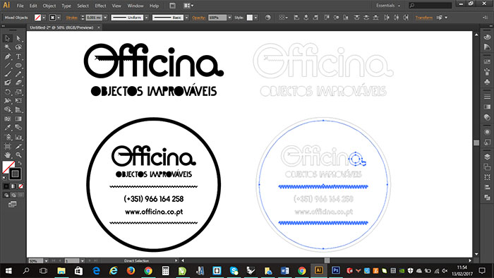
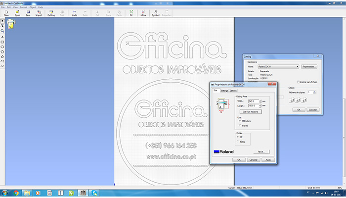
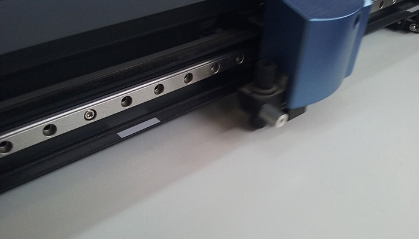
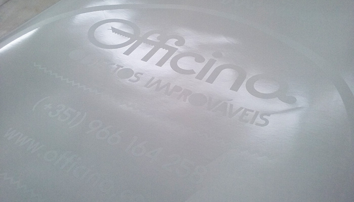
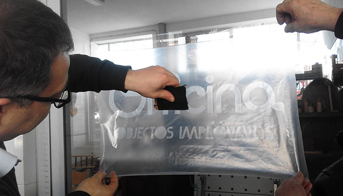
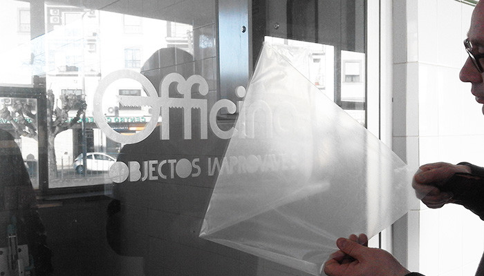
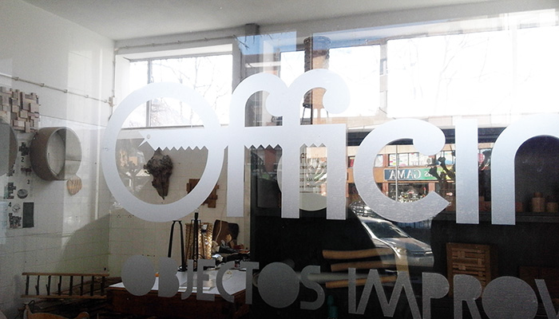
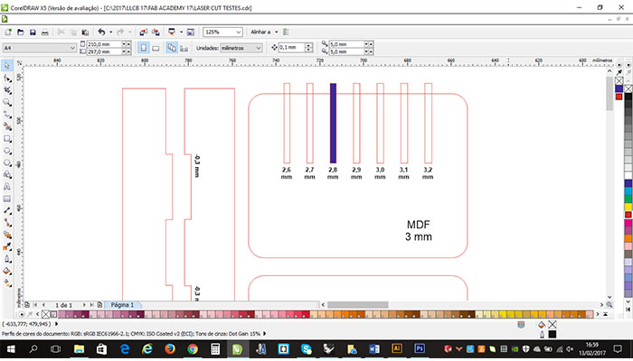
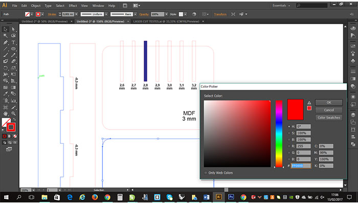
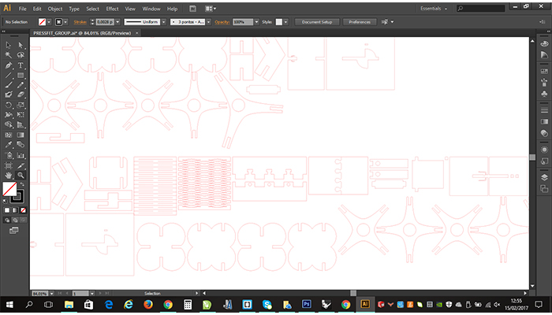

3_computer-controlled cutting

3_computer-controlled cutting
The matter of this week is related with Computer-Controlled Cutting.
I think it is a powerful tool in order to build 3D models using 2D pieces. The process is not fairly direct and it requires interesting ways of approaching the issue.
Objectives:
-Cut something on the Vinyl-cutter
-Design, make, and document a parametric press-fit construction kit
VINYL-CUTTER
The first assignment for the week was to make something with the Vinyl Cutter Machine, I decided to cut my logo.
I used 2 programs for preparing the file, first I made the vector in Illustrator, but for some reason I couldn't open the file in the machine's program, it wasn't recognized in any of the formats I've tried.
How to MAKE it
At the FabLab Aldeias do Xisto we have a Roland G40
Process:

{kind=link}

{kind=link}
I used the Cutstudio to open the file from Illustrator in order to cut the black vinyl in the Roland cutter Machine
The production process
And I used gray vinyl, and the Roland Vinyl Cutter to make this task

{kind=link}

{kind=link}
The application process

{kind=link}

{kind=link}
And this is the final result!

{kind=link}
The second project of the week was to design and prototype an object using laser cutting.
LASER CUTTING
This kind of matter are quite common for me and I feel comfortable enough with it.
How to MAKE it
At the FabLab Aldeias do Xisto we have a Spirit GLS 80Watt Laser. The machine has a work space of 900mm x 600mm.
First step, test tolerance.
I made a press-fit test kit. I did it in Corel draw

{kind=link}
and Illustrator

{kind=link}

Group Assignment
We started this assignment by searching some works done in pressfit, and we found some usefull links,did some tests and found a few pressfit pictures in the web that we started do draw in illustrator. We used 3mm plywood for this tests. We couldn't find good cardboard.

{kind=link}
Drawing the group assignment
Lasercutting the pieces on our Spirit GLS
In the end, Each of us focused on one specific joint
aaaaaaaaaaaaaaaaaaaaa
aaaaaaaaaaaaaaaaaaaaa